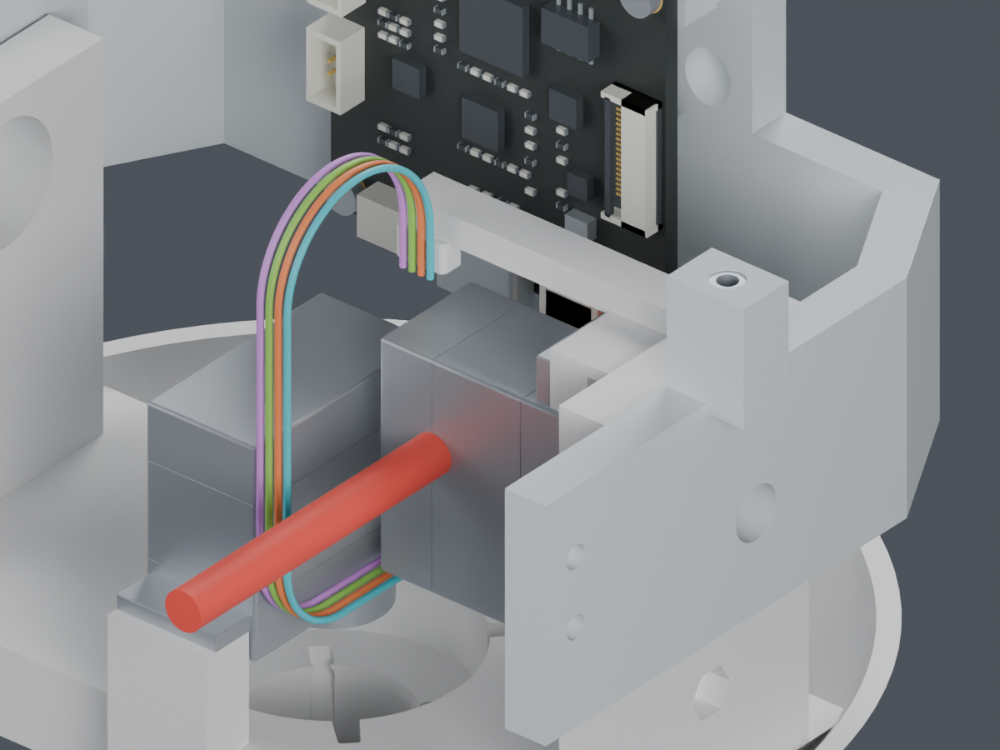
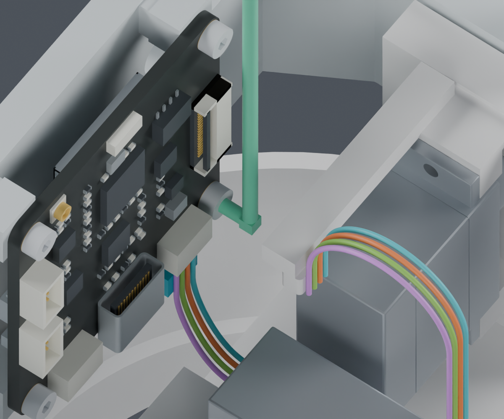
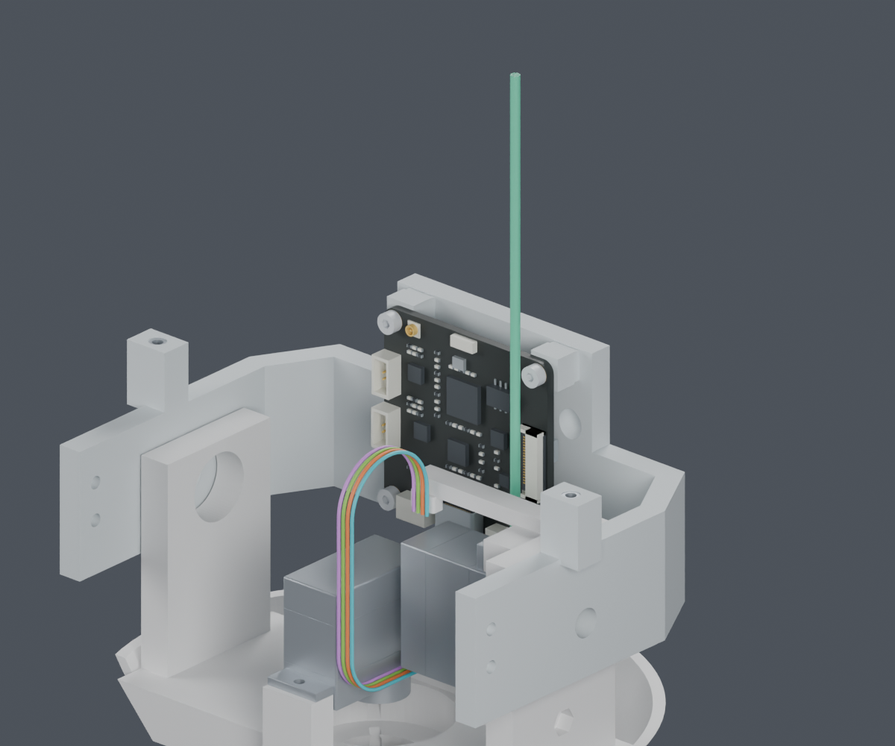

待确认候选：四枚M2×5只换头型，孔位、嵌件、板卡、舵机和打印件不变。工具转动、进入、螺钉装入及130个头部姿态检查通过。主模型尚未修改，完整线束仍未完成。


四枚CAM固定螺钉保持M2×5，改DIN912/ISO4762内六角头：头径3.5→3.8mm，头高1.4→2mm。数量不变，没有新增孔、避让槽或支架。1.5mm内六角也已用于头部舵机耳螺钉。

Wera 950 PKLS 05022040001：1.5mm内六角，90mm长边、4.5mm短边，官方PDF已保存。螺钉采用Bossard BN610 1420569公开参数重建名义包络；尚未采购，没有把重建模型标成官方STEP。
| 验证 | 结果与边界 |
|---|---|
| 四枚螺钉装入 | 通过。三处上方送入；右下角从前方沿孔轴进入，避开板上器件。 |
| 扳手动作 | 连续60°摆动、0–8mm轴向工作空间、90mm上方进入均通过；最小名义间隙约0.43mm（候选扎带）；到打印支架约0.58mm、到板上器件约1.29mm。 |
| 头部运动 | 四枚新螺钉在130个头部姿态中未检出新增刚性干涉。 |
| 四线插合与落座 | 连续线对实体检查通过：两段6mm行程，128个带位移上界的区间覆盖全过程，保持0.3mm名义间隙。连续线间检查也已通过，间隙下界约0.306mm；初次成形仍待完善。 |
| 实物与完整线束 | 实际工具、紧固扭矩、手部操作及动态寿命待验证。穿线、其他线路、最终裁线图仍未完成。 |
供应商按图制作线束已确定。JST连接器、端子与压接资料见完整料号查询记录；CAM实际插座厂牌、物理针腔视图及SCS0009原配舵盘资料仍需进一步确认。本次没有把标准工具资料当作这些缺项已经解决的证据。